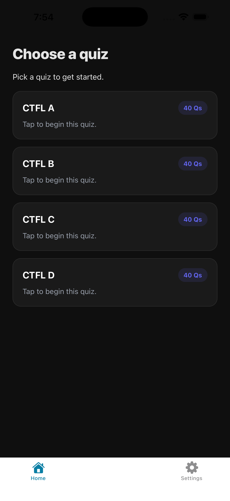
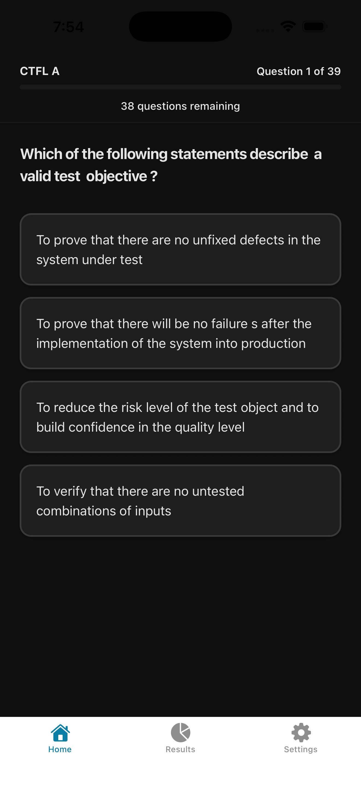
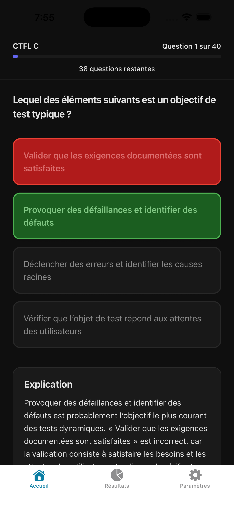

Tester Tester
Tester Tester was created to make sample exams from ISTQB® (International Software Testing Qualifications Board) easily accessible for review on mobile devices. This initial release includes Certified Tester Foundation Level sample examples A, B, C, and D. This app is provided free of charge, for non-commercial use, with gratitude to ISTQB®, the copyright owner, for this allowance. Each original sample exam is available directly from ASTQB® as a PDF.


